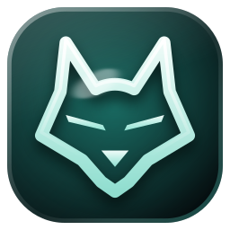

Fenrir Connect, for friends
Your friend hosts. You press Play.
Fenrir Connect installs your host’s modpack into TLauncher, sets the memory for your PC and joins their world as soon as the game loads. Its Dashboard puts the world first; its Tools page checks the connection and the pack for you.
On your phone? Fenrir Connect runs on a Windows PC. Send this page to your PC and open it there.

Step 1 · the link
It starts with a link.
Your host sends it. The page greets you by name, says whether the world is online and who is playing, and has one button, Download Fenrir Setup. Your key is already inside.

Hi Iksamxul, join All the Mods 10 8.2
Icarus invited you. Fenrir Connect installs the modpack, sets up your launcher and drops you into the world, wherever you are.
Windows 10 or 11 · TLauncher installed · about 1.7 GB on the first install, mostly straight from CurseForge.
Server’s up tonight. Your link: your-pc.ts.net:8443/7QX2M9PA
Step 2 · Install & Play
One button. The whole pack.
One button installs the pack and starts the game. Only what is missing downloads, each file checked. TLauncher gets the profile and the memory for your PC, and the game joins your host’s world once it loads.
- Repair checks every file again
- Remove puts your own folders back
- Key
- Install
- Play
Play · All the Mods 10 8.2
64%
3,096 of 4,838 files · 11.8 MB/s · about a minute left
Between games
In touch between games.
Read the world’s chat and send a line. Answer game nights with I’m in. Ask your host for a hand when you die or cannot get in. Send screenshots to everyone.
Chat
World chat
- ChecoPecko joined the world
- ChecoPecko anyone got spare iron? the AE2 chest is empty
- Mogwai check the vault at spawn, second row
- Iksamxul on my way, five minutes
- Iksamxul has made the advancement Diamonds!
Game night
Friday, 21:00, every week 3 are in: ChecoPecko, Mogwai, IksamxulNeed a hand?
Screenshots
Other games
Your host’s other games. Ready with one button.
When your host shares a game like Valheim, it appears on the Games page. Get ready puts the same mods into your own copy, from where they are published (a Nexus Mods file you download yourself, in two clicks), and Join starts the game for your host’s server. Your host sees which friends are ready for each game, and a game night can be on any of their servers: your app says which game and starts it with you. Remove the mods puts your game back exactly as it was.
Games · 3 shared with you
Valheim server
The You page
Your name. Your week.
The name you join with and whether it is on the whitelist. Your time in the world this week, how your last session went, the hall of records, and your code for Fenrir Link, the phone app.
You · in this world
Iksamxul
Your TLauncher name. Your host sees it so they can let you in.Last time you played 1 h 12 min, with 2 deaths and 3 advancements.
Hall of recordsScan your code with Fenrir Link to keep the world on your phone.
The Tools page
Something off? Tools has it.
For the evening the game will not start, the world will not answer or your host asks what is wrong. Every tool answers right where you pressed it.
- Test the connectionWhether your host’s Fenrir and the world answer from this PC, how fast, and who can fix it when they do not.
- What’s in the packEvery mod of the world with its size, and any mods of your own that were set aside.
- A summary for your hostThis PC, your pack and the last error in one message to paste. Your key is never in it.
- Check and repairEvery file against your host’s, fixing whatever differs; the game, logs and screenshots folders one click away.

A note on Windows
Windows may ask. Press Run anyway.
Fenrir is not signed by a big publisher, so SmartScreen may say Windows protected your PC. Choose More info, then Run anyway. You see it once.
Windows protected your PC
SmartScreen stopped an app it does not recognise from starting.
1More info
What you need
A Windows PC. TLauncher. A link.
1.7GB
downloads the first time for All the Mods 10, mostly straight from CurseForge.
3to 6 min
for the first start of a big pack. Then the game joins the world by itself.
0keys to paste
when you start from the link. Fenrir Setup reads your key by itself.
Got a link? Open it. That’s all.
The page your host’s link opens has everything, with your key inside. No link yet? Ask your host to invite you from their Friends card.
Fenrir Connect for Windows 10 and 11